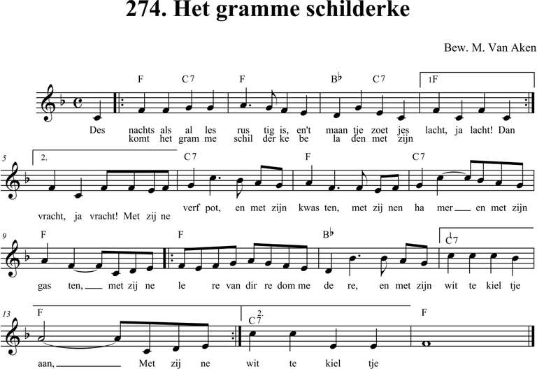
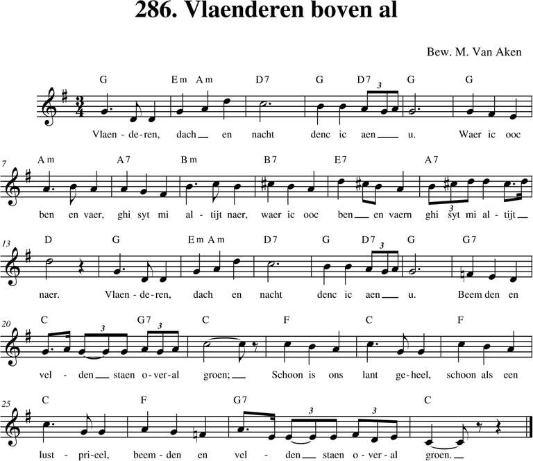
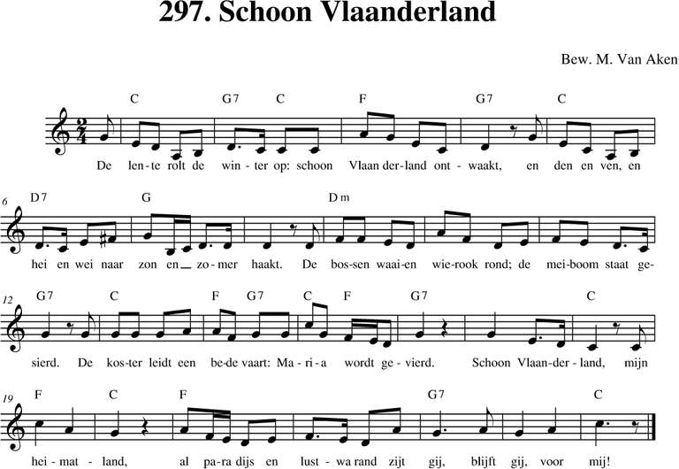
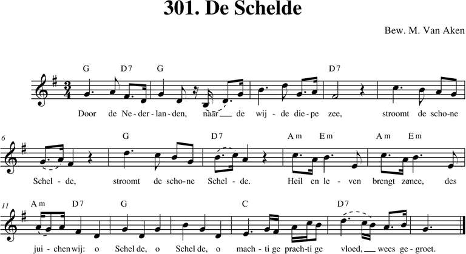

Menu
Bladeren
Alle liederen
p. 1-99
p. 100-199
p. 200-299
p. 300-399
p. 400-499
p. 500 e.v.
Taal
Nederlands
Frans
Engels
Duits
Latijn
Zuid-Afrikaans
Personen
Albrecht Rodenbach
Armand Preud'homme
Emiel Hullebroeck
Eugeen De Ridder
Jozef Simons
Philipp Silcher
René De Clercq
Stephen Foster
Meer...
Thema
Clubliederen
Ceremonies
Studentenleven
Historiek
Volk en land
Verleden
Bezinning
Were di
Pintjedrinken
Minne
Stemming en luim
NIEUWS
thema
Stemming en luim
(140)
202. Ruiterslied
29/12/2018
270. Mijn Vlaanderen heb ik hartelijk lief
29/12/2018
271. Arteveldelied
29/12/2018
273. Drie schuintamboers
29/12/2018

274. Het gramme schilderke
29/12/2018
281. De slag van het stadhuis
29/12/2018

286. Vlaenderen boven al
29/12/2018
294. Daar is maar één Vlaanderen
29/12/2018
295. Vlaanderen
29/12/2018

297. Schoon Vlaanderland
29/12/2018

301. De Schelde
30/12/2018
Volgende